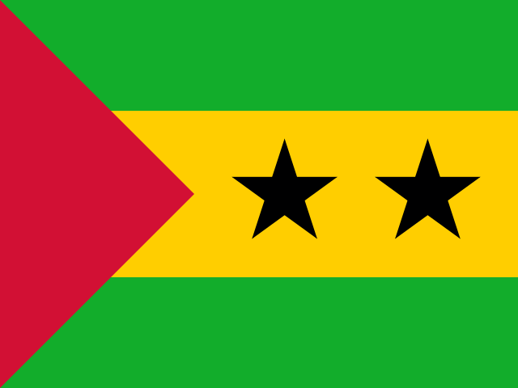
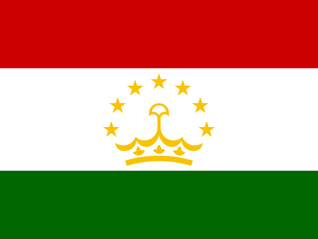

Countries › Oceania
Tuvalu
Where Tuvalu stands out
▲ MOST
1stTuvalu100.0%
2nd Comoros41.5%
Comoros41.5%
3rd

Sao Tome and Principe40.9%1st of 189 · Food and Agriculture Organization (FAO), via World Bank, World Development Indicators (WDI), 2023
▲ MOST
3rd Kiribati72.3
Kiribati72.3
4thTuvalu55.9
5th Antigua and Barbuda54.5
Antigua and Barbuda54.5
4th of 171 · FAO Food Balance Sheets, 2023
▲ MOST
8th Seychelles1,074,398
Seychelles1,074,398
9thTuvalu923,077
10th Malta802,158
Malta802,158
9th of 192 · Central Intelligence Agency (CIA) World Factbook and World Bank (derived), 2024
▲ MOST
10th Somalia6.16
Somalia6.16
11thTuvalu6.05
12th

Tajikistan5.9911th of 152 · United Nations Department of Economic and Social Affairs (UN DESA) Household Size and Composition, 2022
Size, sea and borders
26 km²192nd of 195
24 kilometres (km)147th of 193
Coastline for its sizeCIA World Factbook and World Bank (derived), 2024 · web.archive.org (cia.gov)
923,077 m per 1,000 km²9th of 192
Number of land bordersGeoNames, 2026-08 · download.geonames.org
0158th of 195, tied with 37
Land and height
5 m193rd of 194, tied with 1
Average elevationCIA World Factbook, 2024 edition, 2024 · web.archive.org (cia.gov)
2 m158th of 161, tied with 3
34.3% of land93rd of 192
Orchards and plantationsFAO, via World Bank, WDI, 2023 · data.worldbank.org
100.0% of land1st of 189
People
9,816 people194th of 195
Population densityWorld Bank, WDI, 2023 · data.worldbank.org
378 people per km²23rd of 192
24.3 years128th of 195
67.1 years152nd of 195
Years longer women live than menUN World Population Prospects 2024, 2023 · population.un.org
6.931st of 195
People living in one homeUN DESA Household Size and Composition, 2022 · un.org
6.011th of 152
Food, power and travel
85.2 kg per person a year27th of 171
Poultry supplyFAO Food Balance Sheets, 2023 · bulks-faostat.fao.org
54.2 kg per person a year13th of 171
Fish & seafood supplyFAO Food Balance Sheets, 2023 · bulks-faostat.fao.org
55.9 kg per person a year4th of 171
86.4 kg per person a year32nd of 170
1185th of 189, tied with 4
Football and chess
Football internationals played, all timeInternational football results (martj42), 2026 · github.com
39187th of 193
Showing 20 highlights for Tuvalu. Rank counts from the highest value among the countries that have data: 1st is the most. Ties share a rank. Data version 91, 22 November 2026.
Sort Tuvalu against four others
The game has figures for Tuvalu on 117 of its 190 questions.
The same game for Android and iOS. It launches on 10 December 2026.
Out now.